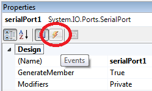
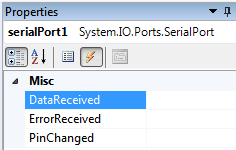
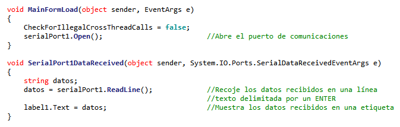

Algunas referencias de microcontroladores PIC incluyen módulos para comunicación dentro de su hardware. El módulo para comunicaciones RS-232 se conoce también como UART.
En general habrá que usar un conversor de niveles basado en el MAX232 o similar.
El protocolo serie es una descripción "digital" (0/1) de lo que debe estar pasando en la línea (por ejemplo, 1 mientras se espera, 0 indica el bit de start, etc.), pero no especifica que voltajes representan el 0/1 lógicos.
Por ejemplo en los PIC se usa la convención (lógica) que el 0 lógico son 0V y el 1 lógico (línea alta) son 5V.
En el puerto serie de un PC (standard RS232) la relación lógica/voltajes está invertida. Un 0 lógico se representa con un voltaje entre 3 y 15V (12 es típico) y un 1 lógico por un voltaje negativo (entre -3 y -15V). Es por esto por lo que para comunicar PIC-PC necesitamos un Max232 o equivalente.
Las especificaciones de su tarjeta le dirán cuales son los voltajes asociados a su puerto serie. Si dice algo de RS232 tendrá que usar seguramente un buffer tipo MAX232.
Si nuestro PIC no tiene UART como es el caso del PIC 16f84A, CCS nos permite implementar la comunicación serie por software y de forma totalmente transparente para el programador. Sin embargo el utilizar un PIC con UART nos permite disponer de una serie de funcionalidades adicionales, como el empleo de interrupciones para controlar el envío y recepción de datos.
Si queremos realizar una comunicación serie utilizando la USART del PIC, las conexiones tendrán que ser a las siguientes: RC6 para la transmisión de datos y RC7 para la recepción de datos.
Para implementar la comunicación entre el microcontrolador y una aplicación desarrollada en C# se debe agregar el control SerialPort al proyecto y configurar los parámetros del puerto.

Seleccione el control SerialPort y haga click en el botón Events de la ventana de propiedades.

Acceda al evento DataReceived para programar las acciones que realizará el control al recibir datos (Doble Click en el espacio en blanco al frente de DataReceived). Allí se programarán las acciones de la aplicación en respuesta al arribo de datos provenientes del microcontrolador.

